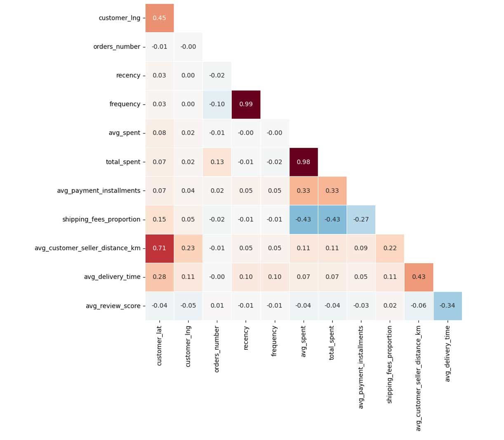
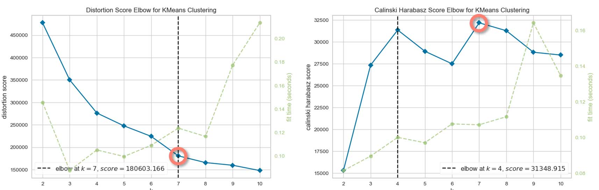
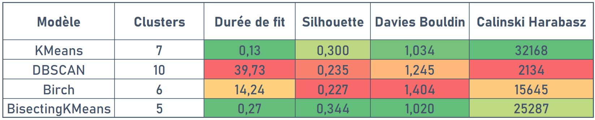

Introduction
Ce projet est basé sur le dataset Brazilian E-Commerce Public Dataset by Olist.
Il s'agit en réalité d'un ensemble de datasets contenant les données sur les commandes passées auprès de la boutique en ligne Brésilienne Olist.
Les datasets contiennent des informations sur environ 100 000 commandes effectuées de 2016 à 2018 sur plusieurs places de marché au Brésil.
Plusieurs dimensions sont représentées : état de la commande, prix, paiement, performances de livraison à l'emplacement du client, attributs du produit et avis rédigés par les clients.
Il y a aussi un dataset géolocalisation qui relie les codes postaux Brésiliens aux coordonnées GPS.
Les objectifs du projet sont les suivants :
- Procéder à une segmentation des clients.
- Comprendre les types d'utilisateurs des différents groupes.
- Fournir une description actionnable pour ces groupes.
- Évaluer la stabilité dans le temps pour déterminer les délais de maintenance.
Les étapes suivantes seront réalisées :
- Préparation des données.
- Analyse exploratoire.
- Tests de différents modèles de clustering.
- Mesure de la stabilité dans le temps.
Retrouvez tout le code de ce projet sur mon GitHub
Préparation des données.
Comme évoqué en introduction, nous avons à notre disposition un ensemble de dataset sous forme de fichiers CSV. Il va falloir assembler tous ces éléments avec les jointures appropriées afin de pouvoir réaliser la suite de notre travail.
Relations entre les différents datasets
Maintenant que nos données sont assemblées dans un unique dataset, nous allons procéder à une étape de feature engineering.
— shipping_fees_proportion
— avg_spent
— recency
— frequency
— preferred_category : 72 modalités → 10 modalités
Exploration des données
Matrice de corrélation

Nous constatons des corrélations et anti-corrélations entre certaines variables numériques.
Distributions des variables numériques
Nous constatons en bas à droite que les notes données par les clients sont globalement très bonnes.
Répartition des modes de paiement
Répartition des commandes en fonction des catégories
Nombre de commandes
Cette dernière observation doit nous interpeller. Seulement 3 % des clients auraient passé plusieurs commandes ?
Plusieurs hypothèses pourraient l'expliquer :
- Les données fournies sont incomplètes.
- Le taux de rétention des clients est catastrophique. Mais ceci serait étonnant puisque nous avons vu dans la distribution des variables numériques que les notes étaient bonnes, si elles sont réelles.
- Il est possible pour les clients de commander sans créer de compte, un ID unique est créé lors de la commande et c'est ce mode qui est privilégié.
Répartition géographique des clients

Les clients se concentrent majoritairement sur la côte est du Brésil.
Ceci est facilement explicable par la répartition de la population dans ce pays.
Le site ne semble pas expédier à l'étranger, ou alors les données fournies sont incomplètes.
Notes des clients en fonction du délai de livraison
Sans grande surprise, les clients ont tendance à moins bien noter la prestation quand les délais de livraisons sont élevés.
Tests des modèles de clustering
Avant de débuter cette partie, il est important de bien déterminer ce que l'on souhaite faire et de quelle manière.
Les différents modèles que nous allons tester :
- KMeans
- DBSCAN
- Birch
- Bisecting KMeans
Critères de comparaison des modèles :
- Score de silhouette.
- Score de Davies Bouldin.
- Score de Calinski Harabasz.
- Distances interclusters.
- Répartition des clients dans les clusters.
- Nombre de clusters.
Représentation des clusters :
- Projection sur t-SNE.
- Graphiques en barres.
- Diagrammes.
Features retenues pour nos segmentations :
Pour que nos clusters soient plus facilement interprétables et la segmentation de bonne qualité, nous allons pour l'instant limiter le nombre de features utilisées.
- orders_number
- recency
- frequency
- total_spent
- avg_delivery_time
- avg_review_score
1. KMeans
Pour ce modèle, il est nécessaire de définir un nombre de clusters, il va donc falloir déterminer le nombre apportant les meilleurs résultats.
Pour ce modèle et les suivants, les résultats présentés sont les meilleurs obtenus après tuning des hyperparamètres.
Choix du nombre de clusters

7 semble être un bon choix pour le nombre de clusters.
Projection sur t-SNE
Nous voyons apparaître des groupes assez distincts.
Répartition des clients dans les différents groupes

La répartition est intéressante.
Silhouettes des différents groupes
Distances interclusters
Attention : il s'agit ici d'une projection, des clusters apparaissant superposés pourraient ne pas l'être dans la réalité.
En revanche, nous pouvons affirmer que ceux qui n'apparaissent pas superposés ne le sont effectivement pas.
2. DBSCAN
Pour ce modèle, il n'est pas possible de définir un nombre de clusters à l'avance.
Projection sur t-SNE
Nous voyons clairement que le clustering n'est pas satisfaisant.
Répartition des clients dans les différents groupes
La répartition n'est pas exploitable en l'état.
Ce modèle n'apporte clairement pas les résultats attendus pour notre problématique, pas la peine d'aller plus loin dans les mesures.
3. Birch
Pour ce modèle non plus, il n'est pas possible de définir un nombre de clusters à l'avance.
Par ailleurs, un plus grand nombre de features a été utilisé avec Birch :
- orders_number
- first_purchase_date
- last_purchase_date
- recency
- frequency
- avg_spent
- total_spent
- preferred_payment_type
- avg_payment_installments
- avg_customer_seller_distance_km
- avg_delivery_time
- avg_review_score
Projection sur t-SNE
La segmentation apparaît moins nette qu'avec KMEANS.
Répartition des clients dans les différents groupes

La répartition est moins intéressante qu'avec KMEANS.
4. Bisecting KMeans
Pour ce modèle, une variante de KMEANS, il est aussi nécessaire de définir un nombre de clusters, il va donc falloir déterminer le nombre apportant les meilleurs résultats.
Choix du nombre de clusters
5 semble être un bon choix pour le nombre de clusters.
Projection sur t-SNE
Nous voyons apparaître des groupes bien distincts.
Répartition des clients dans les différents groupes
La répartition est intéressante.
Silhouettes des différents groupes
Distances interclusters
Il semble y avoir moins de superpositions qu'avec KMEANS.
Pour rappel, il s'agit d'une projection sur deux composantes.
Choix du modèle
Bilan des métriques classiques

Bisecting KMeans a les meilleurs résultats sur les scores de silhouette et de Davies Bouldin, le deuxième meilleur pour celui de Calinski Harabasz.
Compte tenu des résultats récapitulés dans ce tableau, ainsi que nos autres critères que sont les distances interclusters et les critères métier répartition des clients et nombre de clusters, le modèle que je retiens est Bisecting KMeans.
Stabilité à l'initialisation
Les résultats obtenus avec Bisecting KMeans sont-ils stables lors de différentes exécutions du modèle ? Pour l'évaluer, un premier run sera réalisé en fixant le Random State, puis de multiples run seront lancés sans fixer ce paramètre. Ensuite, la similarité entre les clusters obtenus lors du run initial et les run suivants sera déterminée avec le score ARI (Adjusted Rand Index).
Procédure d'évaluation de la stabilité
Seuls les résultats des 10 premières itérations sont présentées ici.
Nous constation que la stabilité à l'initialisation est bonne, puisque le score ARI ne descend pas en dessous de 0,8.
Interprétations et recommandations
Observons les valeurs de nos variables en fonction des groupes de client obtenus.
Seuls les résultats des 10 premières itérations sont présentés ici.
Ces résultats nous permettent de comprendre les types d'utilisateurs des différents groupes et de proposer des recommandations d'actions appropriées.
Type de clients et recommandations
Fréquence de mise à jour
Pour évaluer à quelle fréquence il faut mettre à jour le modèle, un premier clustering va être réalisé sur une portion de notre dataset qui correspondra à une période initiale.
Nous pouvons faire ceci, puisque nous disposons des dates des commandes.
Puis, nous réaliserons ensuite des clustering successifs en ajoutant à chaque fois une tranche de temps supplémentaire à la période initiale.
Il ne nous restera alors qu'à comparer les clusters de la période initiale avec ceux obtenus lors des différentes itérations à l'aide du score ARI.
Stabilité du clustering dans le temps
Le score ARI diminue assez rapidement dans le temps.
On constate qu'il sera nécessaire de mettre à jour régulièrement le modèle (réentraînement) pour qu'il conserve un maximum de pertinence.
Ceci ne posera pas de problème car la durée d'entraînement pour Bisecting KMeans dure moins d'une seconde.
Et il serait de toute façon assez dommage de ne pas intégrer les potentiels nouveaux clients dans nos clusters avant le lancement des campagnes marketing.
Conclusion
Nous avons atteint les objectifs que nous nous étions fixés, à savoir :
- Procéder à une segmentation des clients.
- Comprendre les types d'utilisateurs des différents groupes.
- Fournir une description actionnable pour ces groupes.
- Évaluer la stabilité dans le temps pour déterminer les délais de maintenance.
Perspectives
À l'issue de ce premier travail, nous pouvons envisager les perspectives suivantes :
- Tester d'autres algorithmes de clustering.
- Faire des clusterings sur la base d'autres features.
- Obtenir plus de données sur les clients.
- Considérer d'autres méthodes pour partitionner les clients.
Ici, les features choisies nous rappellent la segmentation classique RFM. Obtenir une telle segmentation ne nécessite pas d'algorithmes de machine learning. Gardons en tête que plus le nombre de features utilisées pour la segmentation sera important, plus il sera complexe d'interpréter les groupes obtenus.
Si le manque d'interprétabilité ne pose pas forcément de problème lors de la création d'un moteur de recommandations par exemple, cela sera plus problématique si un service marketing est censé mettre en place des supports de communication spécifiques aux groupes obtenus.